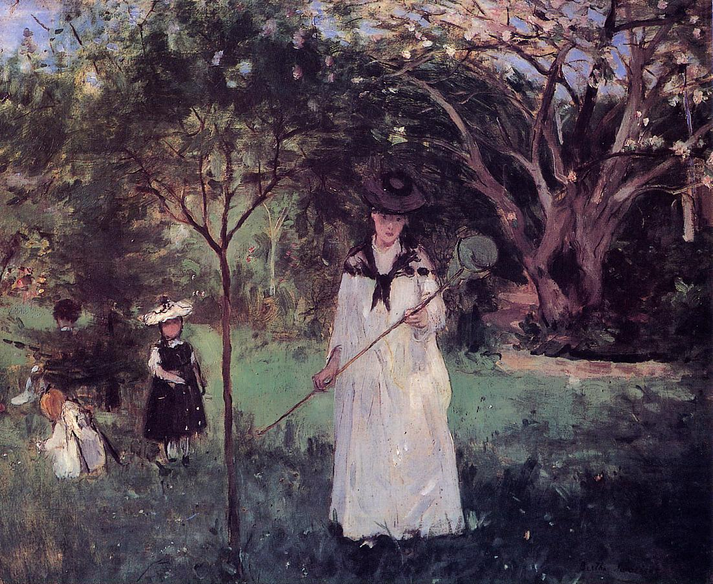

Tags: flowers-and-plants, gardens-and-parks, forests-and-trees
Style: Impressionism
Artist: Morisot Berthe
Title: The Butterfly Hunt
Year: 1874
Genre: genre painting
Categories: cliff (20.2%); megalith (9.6%); maypole (5.4%); fountain (3.6%); birdhouse (3.5%)